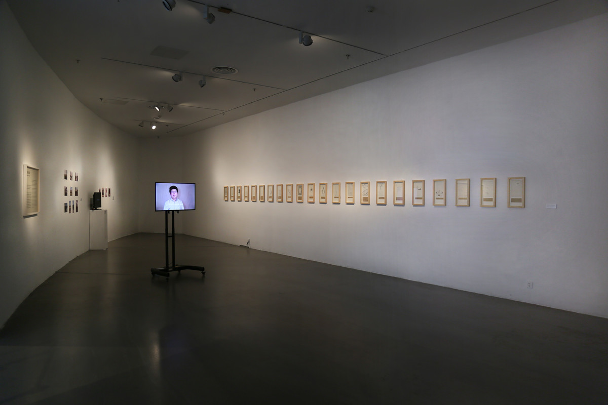

胡志明的风景

纸上墨水绘画，25x17.5cm，22幅，两段彩色高清影像时长分别为12分41秒和20分41秒，尺寸可变，数字图像微喷到纯棉相纸 120x80cm, 2017
我在越南胡志明市旅行的时候买了一本《情人》，将其中的22段描写当地风景的情节用越南语朗诵出来，邀请一个越南人根据他听到的录音，将这22段风景画出来。
艺术家石玩玩在越南旅行时买了一本《情人》，他将其中二十二段描写风景的情节用越南语朗诵出来，邀请越南人阮维根据他听到的录音，将这二十二段风景画出来。这促成了这里的《胡志明的风景》。
这里不仅是二十二段风景，而且是二十二段二手，甚至是三手四手的风景及其图像。而艺术家最近将其工作简要描述为“不以生产图像为目的的行动和公共艺术实践”。这种纠结的关系也延续性地体现在“马尼拉”、“望京”、“伊斯坦布尔”、“常德”的“诗人”、“少年”、“画家”“卖画”等现实的，至少言语和形象在其中不断成批汹涌而出的实践中。一定有一种情义让人难以割舍这种纠结。而在《胡志明的风景》中，“画家”、“胡志明”、“《情人》”等形象也不断地跳将出来，纷扰牵扯进来的专业、业余、公共的作者们或者读者们。对，这些都是石玩玩自找的“事儿”。有义有情？这一回的《胡志明的风景》，被艺术家搭讪到他的“事儿”的，都有幸暂聚一个以此命名的（艺术）展览。一段关系总要结束，另一段感情总要开始。
——王亚敏